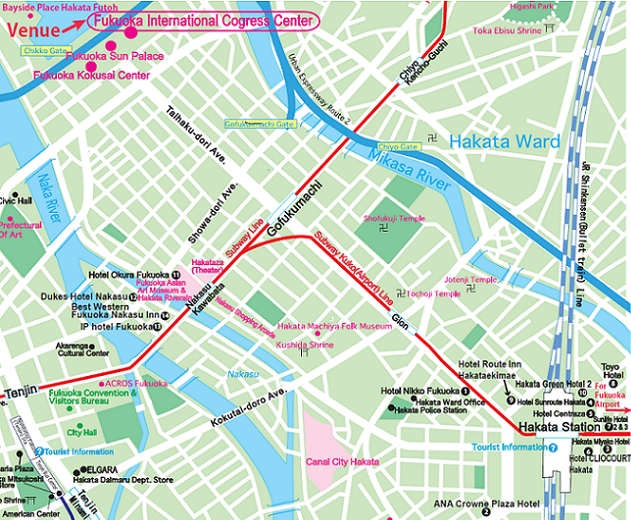

MODULARITY: aosd•13 > Accomodations
Accomodations
You will be able to make reservations of those hotels through the online registration system. Please send an email to fukuoka_ec [_at_] nta.co.jp if you want to book a double room or a twin room (Double Occupancy).
Near Hakata Station
- 1. Hotel Nikko Fukuoka
-
- Hakata Area/2 min. by walk From Hakata St.
- Single: JPY 22,000
- 2. ANA Crowne Plaza Hotel Fukuoka
-
- 5 min. by walk from JR Hakata St.
- Twin(Single Occupancy): JPY 21,000
- 3. Hakata Miyako Hotel
-
- Hakata Area/2 min. by walk from Hakata St.
- Single: JPY 10,500
- 4. Hotel Sunrout Hakata
-
- 1 min walk from JR/Subway Hakata St.
- Single: JPY 8,400
- 5. Hotel Centraza Hakata
-
- 1 min. walk from Hakata St.
- Single: JPY 8,400
- 6. HOTEL CLIO COURT HAKATA
-
- 1 min. walk from JR Hakata St.
- Single: JPY 8,400
- 7. Sun Life Hotel 2•3
-
- 1 min. JR/Subway Hakata St.
- Single: JPY 7,350
- 8. Toyo Hotel
-
- 5 min. walk from JR/Subway Hakata St.
- Single: JPY 6,500
- 9. Hotel Route Inn Hakataekimae
-
- Hakata Area/1 min. by Walk from JR Hakata St
- Single: JPY 6,600
- 10. Hakata Green Hotel Ekimae
-
- Hakata Area/1 min. by Walk from Hakata St.
- Single: JPY 6,300
Near Nakasukawabata Station (next to Tenjin St.)
- 11. Hotel Okura Fukuoka
-
- Nakasukawabata Area/3min. by walk from Nakasukawabata St.
- Single: JPY 18,900
- 12. Dukes Hotel Nakasu
-
- 2 min. walk from Nakasukawabata St.
- Single: JPY 7,875
- 13. IP HOTEL Fukuoka
-
- Nakasu Area/2 min. by walk from Nakasukawabata
- Single: JPY 7,500
- 14. Best Western Fukuoka Nakasu Inn
-
- 1min. walk from Nakasukawabata St.
- Single: JPY 6,300